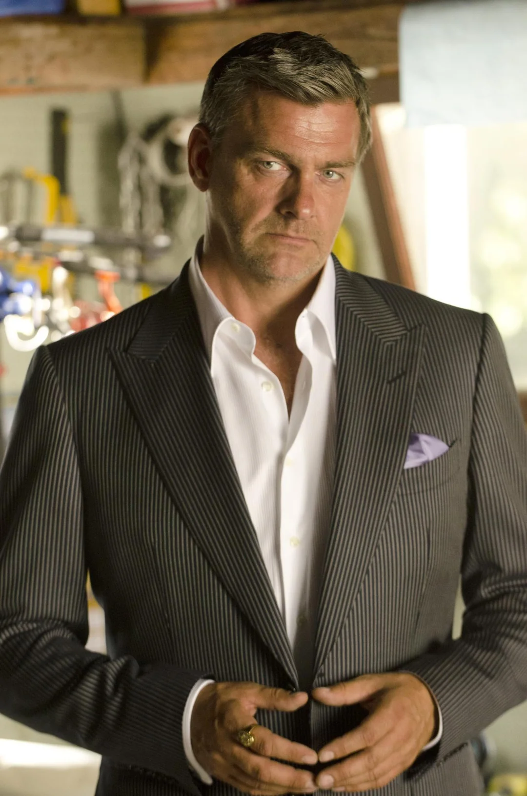
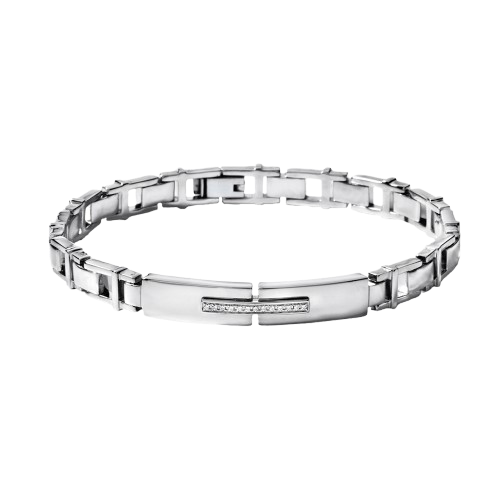
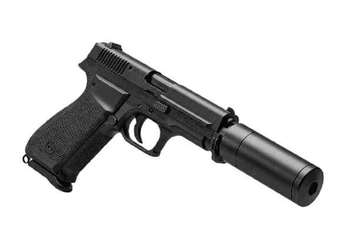

KILLER PROFILE
CRIME SCENE EVIDENCE

REPERTO A: BRACCIALE DI VIKTOR
REPERTO B: PISTOLALa settima stagione eleva il livello del pericolo introducendo un avversario radicalmente diverso dai soliti serial killer psicopatici: il crimine organizzato internazionale. Quando Dexter uccide Viktor Baskov, un killer della mafia ucraina che aveva assassinato un poliziotto di Miami, non sa di aver appena scatenato la furia della Koshka Brotherhood, un sindacato criminale spietato che risponde a un solo leader carismatico e inarrestabile: Isaak Sirko.
Isaak Sirko è un boss della malavita sofisticato, colto, elegantissimo e dotato di una freddezza militare spaventosa. Arrivato a Miami dall'Europa dell'Est per investigare sulla scomparsa di Viktor, Isaak individua rapidamente Dexter come il responsabile. Ciò che rende Isaak il nemico più pericoloso di sempre non è solo la sua scorta di sicari, ma la natura del suo movente: non uccide per una pulsione malata o per seguire un codice morale, ma per puro e viscerale amore. Viktor era il suo compagno segreto, e la sua perdita ha trasformato il boss in una macchina da guerra mossa solo dal desiderio di vendetta.
Il rapporto tra Dexter e Isaak si evolve in una strana e affascinante dinamica di mutuo rispetto. Entrambi sono mostri costretti a nascondere la loro vera natura al mondo, entrambi comprendono il peso di vivere nell'ombra. Isaak non si nasconde dietro maschere o deliri religiosi; affronta Dexter a viso aperto nei locali di Miami, dando vita a una caccia all'uomo in cui i ruoli di predatore e preda si confondono continuamente.
La firma di Isaak Sirko è l'efficienza clinica del crimine organizzato, dove l'omicidio è uno strumento di potere e di pulizia dei testimoni.
L'Esecuzione Diretta: A differenza di altri boss, Isaak non esita a sporcarsi le mani. Elimina i suoi stessi alleati o i testimoni scomodi di persona, usando pistole di grosso calibro o coltelli, mostrando una totale assenza di paura o rimorso.
La Rete Koshka: Isaak controlla una fitta rete di copertura che include strip club di facciata (il Fox Hole), poliziotti corrotti e sistemi di smaltimento dei cadaveri tramite navi cargo internazionali, rendendo quasi impossibile per la Miami Metro incriminarlo legalmente.
Il Duello Tattico: Quando si ritrova braccato dai suoi stessi superiori in Ucraina, Isaak stringe una temporanea e incredibile tregua con Dexter, unendo le forze con l'Oscuro Passeggero per eliminare i sicari mandati a ucciderlo in una sparatoria strategica all'interno di un poligono di tiro.
La parabola di Isaak Sirko non si concluderà sul classico tavolo rivestito di plastica di Dexter. Ferito a morte in un agguato da un criminale minore, Isaak esalerà l'ultimo respiro su una barca in mezzo all'oceano, lo stesso luogo in cui è stato gettato il corpo del suo amato Viktor. La sua morte lascerà a Dexter una profonda lezione sulla fragilità dei sentimenti e sulla condanna alla solitudine che accomuna tutti i mostri.
"Siamo entrambi prigionieri delle nostre passioni, Dexter. Solo che la mia mi ha ucciso prima della tua."